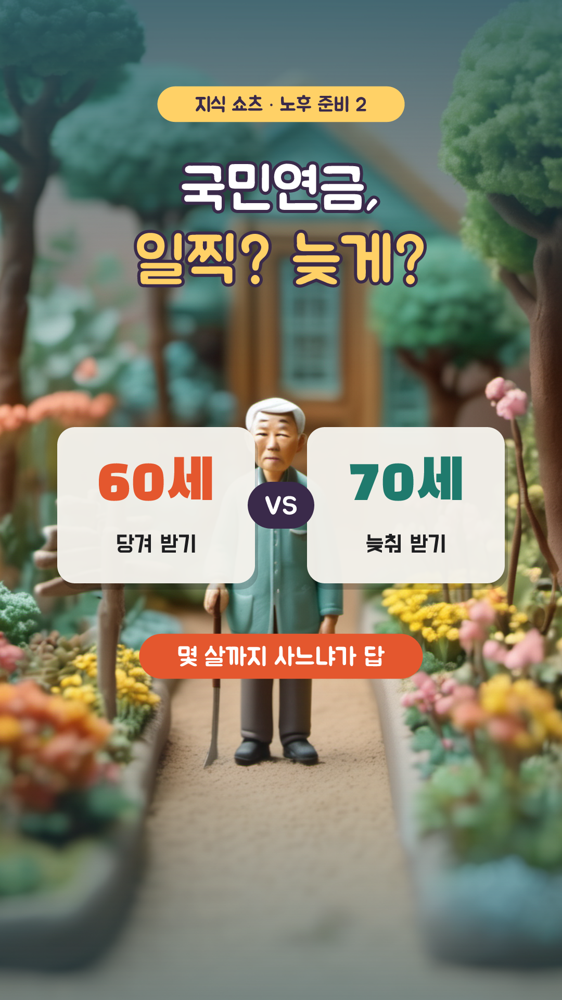
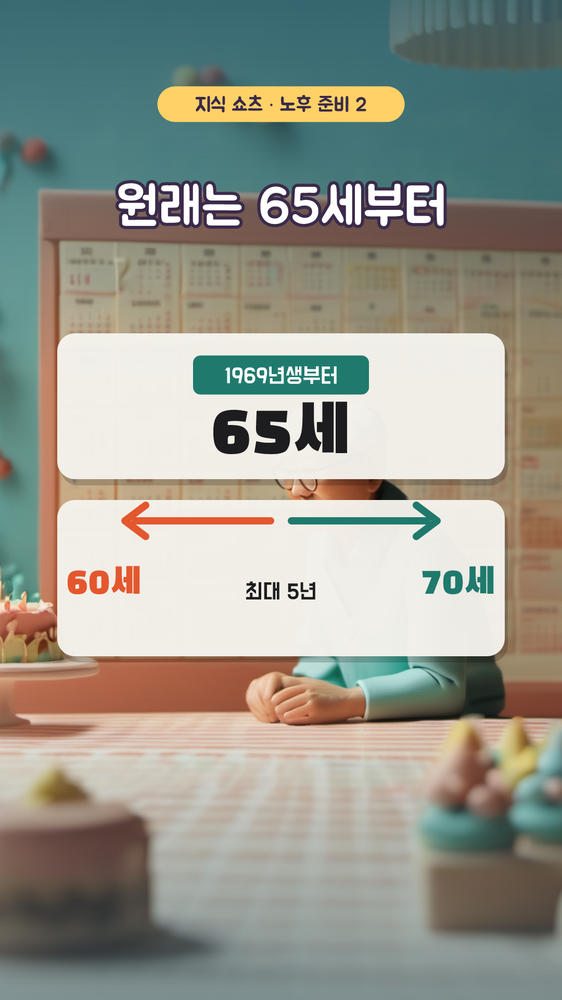
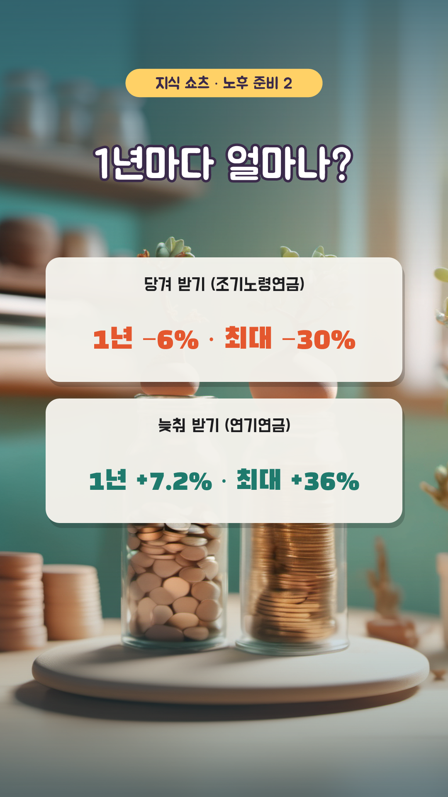
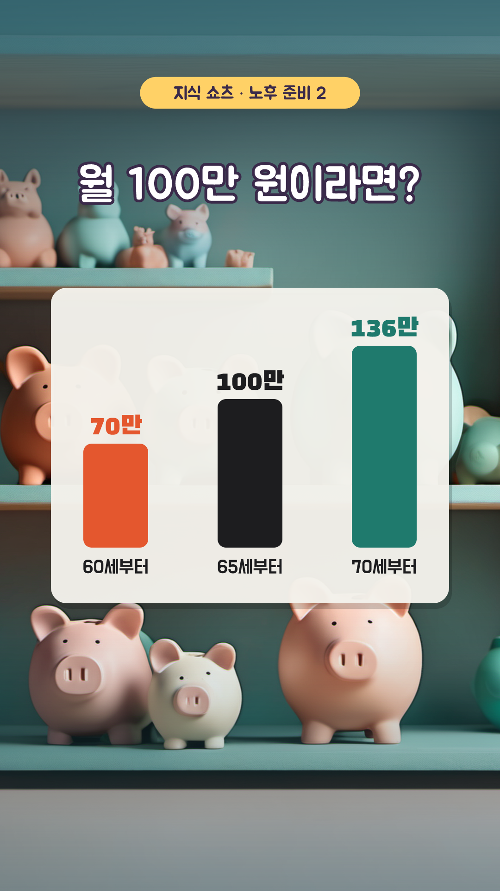
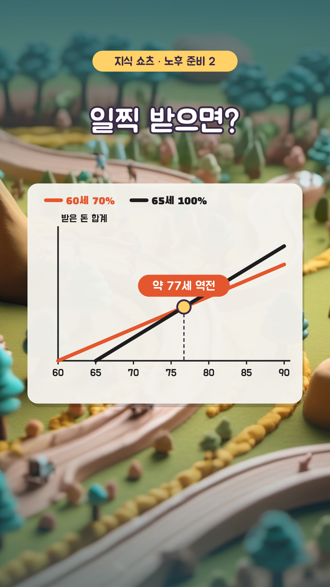
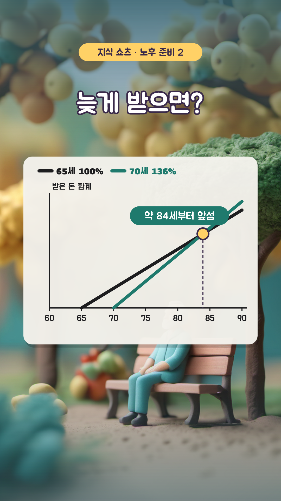
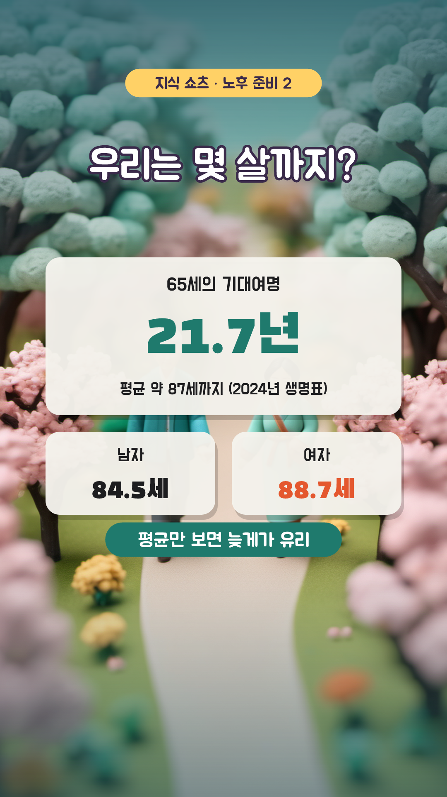

국민연금, 일찍 받을까 늦게 받을까? — 12컷 콘티
1분 30초 · 1080×1920 · 30fps · 자막 카드 y=1480 · 내레이션 ko-KR-Chirp3-HD-Charon · 지식 쇼츠 14편 · 3D 클레이 AI + 인포그래픽

S01
0:00–0:05 · 5초
모션
ai 카메라 이동 0.0s, title 팝 0.0s, vs 팝 0.8s, key 도장 2.6s
내레이션
국민연금, 일찍 받을까 늦게 받을까? / 답은 몇 살까지 사느냐에 달렸어요

S02
0:05–0:12 · 7초
모션
ai 카메라 이동 0.0s, title 팝 0.0s, base 팝 0.4s, move 아래에서 3.6s
내레이션
1969년생부터 국민연금은 65세에 받아요 / 하지만 60세로 당기거나 70세까지 늦출 수도 있죠

S03
0:12–0:19 · 7초
모션
ai 카메라 이동 0.0s, title 팝 0.0s, early 왼쪽에서 0.4s, late 오른쪽에서 3.4s
내레이션
당겨 받으면 1년에 6%씩, 5년이면 30%가 깎이고 / 늦춰 받으면 1년에 7.2%씩, 5년이면 36%가 늘어요

S04
0:19–0:26 · 7초
모션
ai 카메라 이동 0.0s, title 팝 0.0s, bars 와이프 → 0.4s
내레이션
월 100만 원이라면 60세부터는 70만 원 / 65세부터는 100만 원, 70세부터는 136만 원이에요
S05
0:26–0:33 · 7초
모션
ai 카메라 이동 0.0s, title 팝 0.0s, coins 팝 0.4s, note 도장 3.6s
내레이션
그럼 받은 돈을 다 더해 볼까요? / 물가나 이자는 빼고 단순하게 계산해요

S06
0:33–0:41 · 8초
모션
ai 카메라 이동 0.0s, title 팝 0.0s, axes 페이드 0.2s, early 와이프 → 0.6s, normal 와이프 → 2.0s, cross 도장 4.6s
내레이션
일찍 받으면 처음엔 5년 먼저 받아 앞서지만 / 약 77세가 되면 65세부터 받은 사람에게 역전돼요

S07
0:41–0:48 · 7초
모션
ai 카메라 이동 0.0s, title 팝 0.0s, axes 페이드 0.2s, late 와이프 → 0.8s, cross 도장 3.6s
내레이션
늦게 받으면 기다린 5년만큼 뒤처지다가 / 약 84세부터 앞서기 시작해요

S08
0:48–0:55 · 7초
모션
ai 카메라 이동 0.0s, title 팝 0.0s, life 팝 0.4s, sex 아래에서 2.6s, so 도장 4.0s
내레이션
65세 한국인은 평균 21.7년을 더 살아요 / 약 87세까지니까, 평균만 보면 늦게 받는 쪽이 유리하죠
S09
0:55–1:02 · 7초
모션
ai 카메라 이동 0.0s, title 팝 0.0s, a 왼쪽에서 0.4s, b 오른쪽에서 1.6s, c 왼쪽에서 3.6s
내레이션
하지만 건강이 걱정되거나 당장 생활비가 급하다면 / 일찍 받는 게 나을 수도 있어요
S10
1:02–1:10 · 8초
모션
ai 카메라 이동 0.0s, title 팝 0.0s, rule 팝 0.4s, out 아래에서 3.8s
내레이션
주의할 점! 연금 같은 소득이 1년에 2,000만 원을 넘으면 / 건강보험 피부양자에서 빠져 건보료를 내야 할 수 있어요
S11
1:10–1:20 · 10초
모션
ai 카메라 이동 0.0s, badge 팝 0.0s, question 팝 0.3s, box 팝 0.8s, answer 도장 3.6s, why 페이드 6.6s
내레이션
퀴즈! 당겨 받아 깎인 연금, 65세가 지나면 원래대로 돌아올까? / 정답은 X! / 한 번 깎인 금액은 평생 그대로예요
S12
1:20–1:30 · 10초
모션
ai 카메라 이동 0.0s, look 팝 0.2s, button 팝 4.8s, finger 탭 5.6s
내레이션
내 건강과 생활비를 따져 받는 나이를 골라 보세요 / 더 많은 지식이 궁금하다면 구독해 주세요